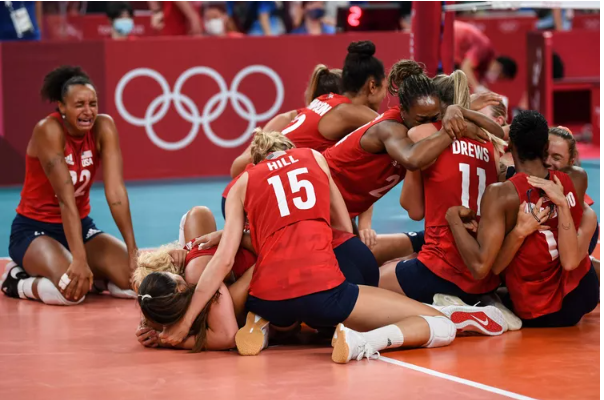

For a sport that has been around for over a century, the origin of volleyball traces its roots to a rather humble beginning.
History has it that William G. Morgan, who invented the game of volleyball in 1895, came up with the idea so that people who found basketball’s
‘bumping’ or ‘jolting’ too strenuous could have an alternative physical activity to fall back on.
The ball came from baske`tball, the net from tennis and the use of hands from handball. While this made up a game of volleyball, it was lent some
competitive tone with the introduction of innings - later to be called sets - that was borrowed from baseball. Morgan introduced the sport -- called mintonette,
the original name of volleyball -- at the YMCA Physical Director's Conference a year later at Springfield College, Massachusetts.
In search of an appropriate game, tennis occurred to me, but this required rackets, balls, a net and other equipment, so it was eliminated, but the idea of a
net seemed a good one," Morgan explained. "We raised [the net] to a height of... just above the head of an average man. We needed a ball and among those we tried was a basketball bladder,
but this was too light and too slow. We therefore tried the basketball itself, which was too big and too heavy.
A new specially designed ball, which was lighter and smaller, was introduced in 1900.
Though it was incomplete with no fixed rules and a format to follow, the sport did enough
to win over the delegation and soon became a part of YMCA’s wide network throughout the USA with a new name -
volley ball (initially it was termed as two words). Volleyball was officially selected to spell as a single word in 1952.
A sport that traced its origin to basketball, baseball, tennis and handball - and now estimated to be played by over 800 million
globally - had thus been established.
Development of volleyball
The coming years saw rules for the game being drawn up as volleyball continued to bank on YMCA’s popularity to go global.
With YMCA societies playing prominent roles in regions like India, China, Europe, South America and Africa, volleyball would soon spread
in these regions.
It was in Asia that it gathered steam. By 1913, the growth of the game in the continent was evident as that year saw it being included in the
first Far-Eastern Games, organised in Manila. It was not until 1900 that a specially designed lighter and smaller ball was devised, which opened up a
new array of tactical and technical possibilities for the sport.
It was not until 1900 that a specially designed lighter and smaller ball was devised, which opened up a new array of tactical and technical possibilities for the sport.
Rules for playing volleyball kept establishing over the years; points per set changed from 21 to 15 points in 1917, in the following year the number of players per team was set at six and so on.
Volleyball at the Olympics
With an international body to look after the sport and its growing popularity, indoor volleyball was granted Olympic status in 1957 by the International Olympic Committee (IOC).
Volleyball made its Olympic debut at the Tokyo 1964 Games.
Brazil, the erstwhile Soviet Union and Italy have bagged the most medals in men's Olympic volleyball (six each), with the South American team leading the honours with their three golds and three silvers.
Among the women’s teams, six countries have won the Olympic gold medal in volleyball with the Soviet Union leading the overall medals tally with six (four golds and two silvers). Japan and the Soviet Union played
each of the first four gold medal matches at the Summer Olympics from 1964 to 1980. Japan won the first-ever final on home soil at Tokyo 1964 while the Soviet Union pipped them to win gold at the 1968 Games and Munich in 1972.
Japan then picked their second gold medal at Montreal 1976.

Team USA Wins First-Ever Women's Volleyball Gold Medal at Tokyo Olympics